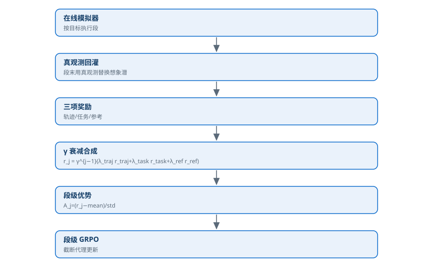

在线模拟器 rollout + 真观测回灌 · 轨迹/任务/参考三奖励 · γ 衰减合成 · 段级组相对优势
WorldVLN 把导航拆成段：每段在模拟器里走，段末用真实观测替换想象潜（防漂移）；奖励=轨迹相似 + 任务进度 + 参考策略锚定，按段做 GRPO。
| 项 | 值 |
|---|---|
| 单位 | 段（segment），同一 goal 下 J 段 |
| 奖励 | r_j = γ^{j−1}(λ_traj r_traj + λ_task r_task + λ_ref r_ref) |
| 优势 | 段级组归一化 (r_j−mean)/std |
| 结果 | 导航成功率提升（论文表格，L2） |

物理：真观测回灌防止长程想象误差累积；越早的段权重越大（后面还能纠）。
物理：轨迹项：与专家路点的距离，越像越高。
物理：任务项：段末离目标越近越高。
物理：参考项：别漂出 SFT 分布（KL 的奖励版）。
物理：段级合成，早段权重更大。
物理：段级组相对优势；正→提高该段概率，负→降低。
按论文 §4.2–4.3 重建；无官方代码。
def worldvln_step(model, segs, goal, gamma, lam):
# 物理：同一 goal 下比较哪段走得更好
R = []
for j, seg in enumerate(segs, start=1):
r_traj = 1/(1+dist(seg.a, seg.a_star)) # 像专家
r_task = 1/(1+dist(seg.end, goal)) # 到目标
r_ref = logp_ref(seg.a, seg.s) # 别漂
R.append(gamma**(j-1)*(lam.traj*r_traj + lam.task*r_task + lam.ref*r_ref))
R = tensor(R)
A = (R - R.mean()) / (R.std() + 1e-8) # 组相对优势（无 critic）
loss = -min(ratio*A, clip(ratio, .8, 1.2)*A).mean()
model.update(loss)返回 方法精读 Wiki 索引 ｜ 博客：VLA/WAM 的 RL 后训练实现版